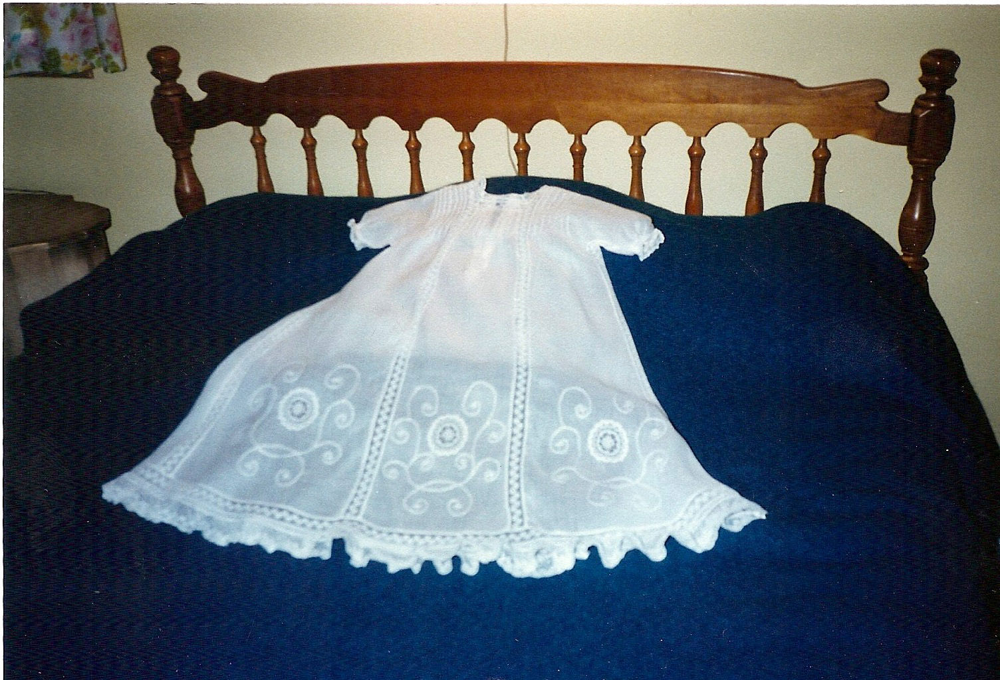
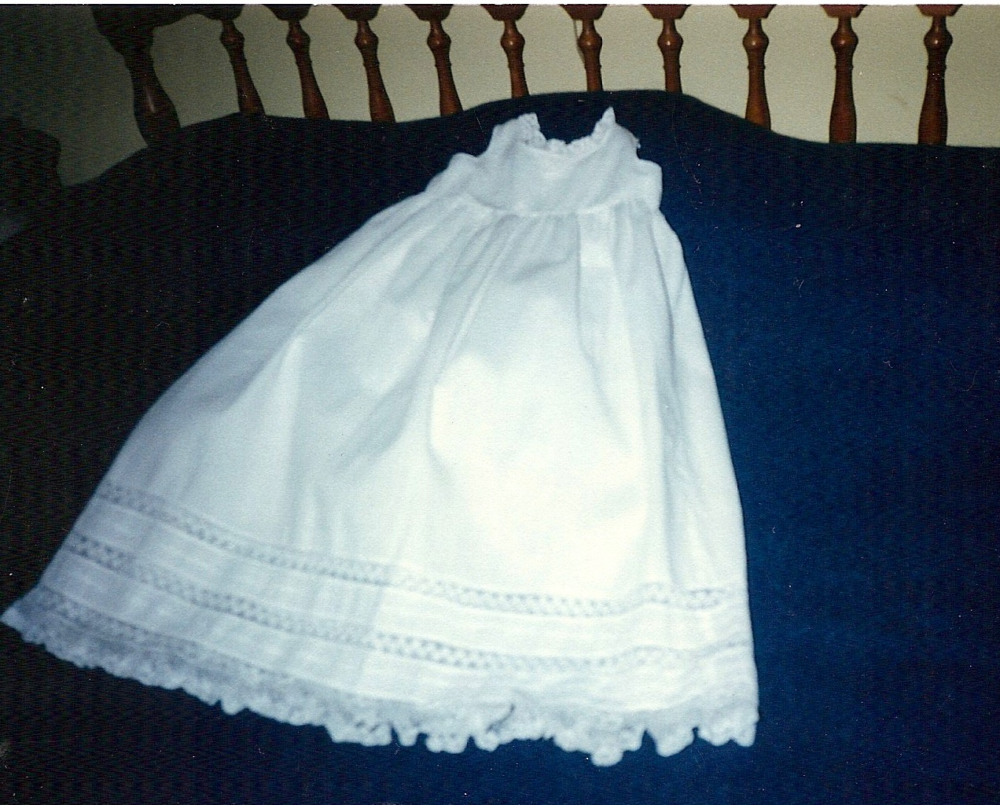
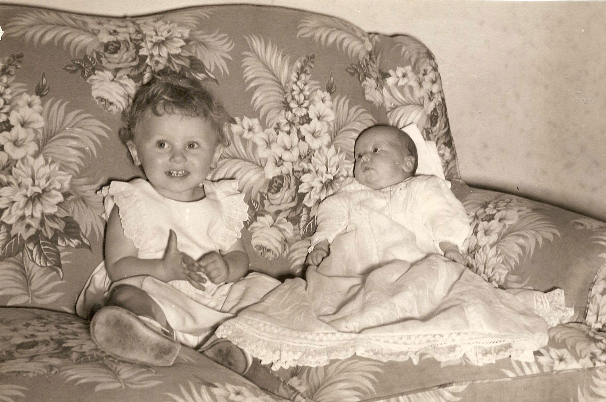
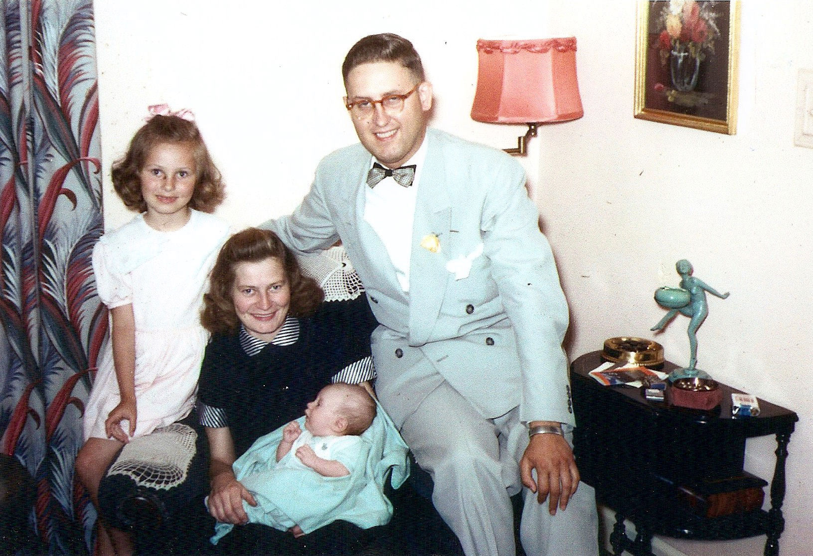
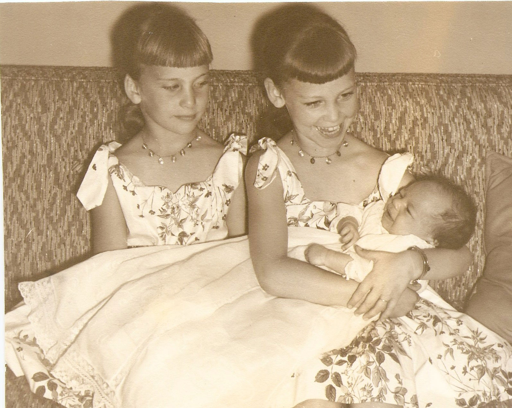

The Meyer Baptismal Gown History Book

June 1985, 73 years old.
The Dress

May 1985, 73 years old.
The Dress was made for Robert Henry Meyer by Eda Helms, wife of August Helms, in March of 1912. August Helms as the brohter of Robert's mother, Martha Helms Meyer.
XX
First Generation
The dress was first worn by Robert Henry Meyer at his baptism in April 1912. He was the son of Theodore Wilhelm adn Martha Marie Helms Meyer. Trinity Lutheran Church - Cleveland, Ohio.
The Second to wear teh dress was his sister, Ruth Ester Meyer, at her baptism, July 1920. Trinity Lutheran Church - Cleveland, Ohio.
The third to wear it was his second sister, Lenore Kathryn Meyer, at her baptism, August 1922. Trinity Lutheran Church - Cleveland, Ohio.
XX
#4 Cathy Lee Heimforth
May, 1947
Cathy Lee Heimforth, child of John and Lenore (nee Meyer) was baptized in may 1947 at Redeemer Lutheran Church - Detroit, Michigan.
Detroit MI, at Grandma and Grandpa Meyer's.
XX
#5 Linda Ruth Lintern
June, 1948
Linda Ruth Lintern, dauther of Lawrence and Ruth (nee Meyer) Lintern, was baptized in June 1948 at Redeemer Lutheran Church - Detroit, Michigan.

Cathy Heimforth and Linda Lintern
XX
#6 Carol Adele Lintern
May, 1950
Carol Adele Lintern, dauther of Lawrence and Ruth (nee Meyer) Lintern, was baptized in May 1950 at Gloria Dei Lutheran Church - Detroit, Michigan.
Linda, Ruth, Lawrence, Carol
XX
#7 Keith William Heimforth
May, 1953
Keith William Heimforth son of John and Lenore (nee Meyer) Heimforth was baptized in May 1953 at Faith - Outer Drive Lutheran Church - Detroit, Michigan

John, Cathey, Lenore, Keith
XX
#8 Paul Lawrence Lintern
July, 1956
Paul Lawrence Lintern, son of Lawrence and Ruth (nee Meyer) Lintern, was baptized in July 1956 at Gloria Dei Lutheran Church - Detroit, Michigan.

Paul, Ruth, Linda, Carol, Lawrence
XX
#26 Mackenzie Ruth Lintern
January 25th, 2015
XX
#26 Mackenzie Ruth Lintern
January 25th, 2015

Oakland Lutheran Church, Mansfield, OH
Amy Lintern, Mackenzie Lintern, Mark Lintern
Left to Right: Ed Hasecke, Mark Lintern, Mackenzie Lintern, Will Hasecke, Paul Lintern, Ben Hasecke, Linda Hasecke
XX